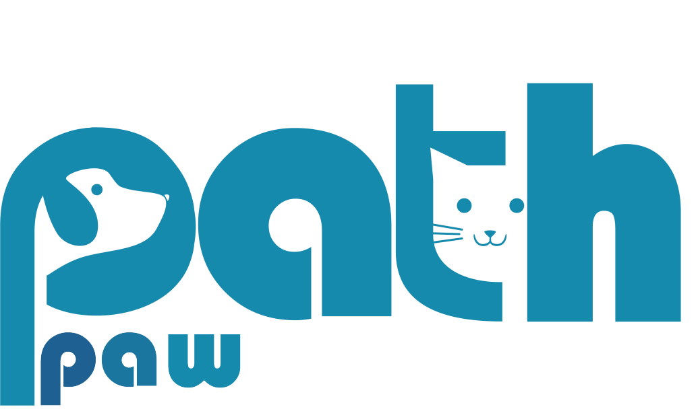

Evcil Dostlarınızın İyi Bakımı:
Onların Sağlığı, Mutluluğu ve Sizin İçin En İyi Kaynak!
Siz de evcil dostlarınızın sağlığını ve mutluluğunu önemsiyorsanız, doğru adrestesiniz! Aşı takip, günlük bakım, eğitim, sağlık önerileri ve daha fazlasını keşfedin. Evcil hayvanlarınızın hayat kalitesini artırmak ve sağlıklarını korumak için bizimle adım atın!
DetaylarPawPath’e hoş geldiniz!
Evcil Dostlarınız İçin Bilgiye ve Bakıma Adanmış Eşsiz Bir Kaynak!
Siz de evcil dostlarınızın sağlığını ve mutluluğunu önemsiyorsanız, doğru adrestesiniz! Evcil hayvanlarınızın hayat kalitesini artırmak ve sağlıklarını korumak için bizimle adım atın!